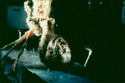
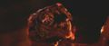

Нечто
1982 (сам по себе римейк еще более древнего «Нечто из иного мира» + одноимённый приквел 2011 года)

Неведомое инопланетное Нечто

Еще одно Нечто
А вообще, что первый, что второй фильмы сняты по старой повести Джона У. Кэмпбелла «Who Goes There?» («Кто идёт?», «Кто там?» и даже «Кто ты?») 1938 года, о чем создатели фильма The Thing 1982 года как-то скромно умолчали, отметив это только в DVD версии, только в конце и только после срача.
Пилот вертолета Макриди (Курт Рассел в гриме Чубакки) возглавляет группу американских учёных после того, как казенный шеф ушел на больничный, простудившись нелетальной дозой утраты доверия. Они живут и работают в Антарктиде. Внезапно с соседней исследовательской норвежской станции сбегает служебная собака, за которой на вертолёте гонятся норвежцы со снайперкой и несколько километров подряд пытаются её выпилить. ИЧСХ, попадают много куда, и даже кое в кого, но только не в собаку. Потом садятся, и пилот пытается попасть гранатой в собаку, которая спереди, но как бы случайно попадает в вертолёт, который сзади. К сожалению, снайпер тоже погибает, и дальше в кине все уже будет не так забавненько.
Пиндосы же оставляют собаку у себя. Марш-бросок до норвежской станции с целью её обследования показывает, что изо льда был выпилен большой космический корабль (который норвежцы тоже нечаянно взорвали), а также кубик с гадским инопланетным оккупантом, который оказался слегка не готов к местным погодным условиям, вследствие чего неожиданно замерз, выйдя до ветру и не успев вернуться. Тут-то любопытные норвежские варвары естествоиспытатели его и взяли холодненьким, незамедлительно приволокли к себе да разморозили. По ходу выясняется, что неведомая хуйня, отойдя от криоконсервации, взбунтовалась, выпилила всех норвежцев, мимикрировала в собаку и сбежала. Квазипсина, будучи в загоне с остальными пиндосскими собаками, кусает одного из экспедиторов. После чего тот стал мутировать и потихоньку зохавывать моски других экспедиторов. И так пока главный герой не зохавал его. Хотя в фильме существуют две концовки, где в одной из них все люди погибают. А ведь пришелец всего лишь хотел улететь домой чтобы его любили две мясных котлеты-гриль заморозиться опять до окончания полярной ночи.
- Считается, что Нечто это метафора рака. У режиссера Карпентера до начала съемок было подозрение на рак желудка.
- Фильм винрарен, но не имел коммерческого успеха, так как был съеден «Инопланетянином» Спилберга.
- В 90-х наши переводчики неоднократно фейлили с переводом. Выходил также под названиями «Оно» («Оно» — это таки Кинг), «Тварь», «Что-то».
- Охренительный, мрачно-зловещий саундтрек (симфонический оркестр и минималистические
свистелки и перделки синтезаторы) Энио Морриконе заслуживает отдельного неоднократного прослушивания.
- Серия «Ice» первого сезона X-files явно навеяна сабжем. Присутствуют полярная станция, лед, инопланетная зараза в виде маленьких червяков. К сожалению, зараженные люди не превращаются в НЕХ а просто гасят своих коллег в надежде присунуть им в ухо червячка.
- В 2011 году был снят привкел к фильму, рассказывающий о норвежской стороне вопроса до событий оригинала. И таки да, там опять во всем виноваты америкосы. Режиссером стал какой-то Маттис ван Хейниген, к тому же младший. Без Морриконе фильм лишился атмосферности, да и тупая пизда, выглядящая умнее расовых норвежских и америкосовских ученых, не доставляет. Немногое, что доставляет — обилие НЁХ и весьма аккуратная стыковка приквела с фильмом 82-ого года, невооруженным взглядом противоречий нет, все то, что герои фильма 82-ого года находят в лагере норвегов получает своё весьма извращенное обоснование. Редкая ныне трепетность к деталям же.
- Сделанная по лицензии одноимённая игра, вышедшая в далёком 2002 году, является эталоном для хорроров. Отличается от своих собратьев (игр, сделаных по фильмам) тем, что в неё вполне можно играть и играть весьма интересно. Разработчики не пошли по проторенному пути и не стали делать коридорный шутер с монстрами, а разработали грамотный и вменяемый геймплей.
- Что в игре, что в фильмах, что в книге указан более чем странный момент: Нечто в принципе невозможно убить холодным и огнестрельным оружием, даже если разрядить ему в голову ленту из минигана или обойму из противотанкового ружья, что не мешает героям экипироваться абсолютно бесполезными стволами, топорами и даже кухонными ножами.
- Напрямую к фильму не относится, однако достойна упоминания укрская игра под названием «Анабиоз: Сон разума», атмосфера в которой чуть менее, чем полностью взята из фильма, разбавлена совковой атрибутикой, очень хардкорным хоррорным fps-ориентированным геймплеем, вполне годному для 2007 года графону с физикой таяния снежинок на руавах ГГ и СПГС-нутой подоплёкой сюжета.
- А ещё есть коротенький рассказ Питера Уоттса «НЕЧТОжества», годно раскрывающий ситуацию со стороны пришельца. Рассказ немного по-своему подаёт события фильма и был написан раньше, чем сняли приквел (потому и игнорирует его, ограничившись парой строк про норвежцев). Оказывается, что пришелец воспринял действия людей (норвежцев для начала), как атаку на себя, а затем переключился на попытки сбежать с планеты. По ходу дела, ассимилируя людей, он с удивлением узнаёт, что эти двуногие не связаны единым сознанием, как он, а полностью автономны друг от друга. Кроме того он поражён тем фактом, что формы жизни этой планеты не способны быстро меняться, как он, и не умеют «накапливать знания». Сия информация приводит пришельца в неподдельный ужас и недоумение. Смех смехом, но если посмотреть на события обоих фильмов, то вполне логично: в приквеле он пытался сбежать, реанимировав свою посудину, а когда её окончательно добили, в оригинальном фильме попытался собрать что-то новое. В обоих случаях двуногие встали у него поперёк дороги, за что и поплатились.